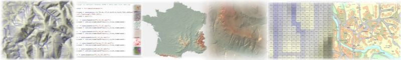

LandSerf 2.3 Preview: Changes Since 2.2

New Functionality
- New scripting language LandScript added allowing macro programming and map algebra processing.
- Polynomial expression parser significantly enhanced and integrated with LandScript parsing.
- New hue-intensity display option for combining two raster maps. Hue-saturation maps now use the primary raster for hue and secondary for saturation with improved hue-saturation transformation.
- Drainage basin and flow magnitude calculations now available.
- New map projections supported: Albers Equal Area (British Columbia) and French NTF.
- Focal fractal dimension option available for parameter selection, multi-scale parameter selection and multi-scale query.
- New vector and point overlay options added.
- New line joining and line simplification functionality available.
- New file input/output formats supported including GPX import and export, comma separated data, DTED import, shapefile export, KML and KMZ export.
- Profile tool, scatterplot, frequency histogram and hammock plot can now output values as text files for further analysis.
- Frequency distribution and hammock plots can now ignore multiple raster values input as a comma separated list.
- VRML output can now save surfaces as TINs.
- New phong shaded relief options available in surface parameter options.
- Querying of vector maps now reports length or area of selected features.
- Option to display numeric raster cell values when zoomed in sufficiently.
- Can now communicate with USB as well as serial GPS.
- Allowed digitizer to add inner rings to polygons by CTRL-clicking polygons inside others.
- Significantly enhanced Ordnance Survey NTF and MasterMap import allowing individual objects to be selected and improved attribute and colour table import.
- Peak classification can now output summit network.
- New vector maps can now be created by selecting attributes of existing vector maps.
- Polygon centroids can now be calculated creating new point vector map.
- Point to density transformation now uses Cressman distance decay away from centre cell.
- New bipolar and exponential colour table presets available.
User Interface Changes
- Syntax coloured script editor to allow LandScript files to be edited, tested and run.
- Primary and secondary objects now more clearly highlighted in thumbnail view. Zoomed in area of main display now highlighted on primary and secondary thumbnails.
- Mouse scroll wheel can be used for zooming in all interaction modes.
- All object metadata can now be copied from info and edit windows.
- Improved random colour table and single colour presets added to colour chooser.
- Circular 'radio buttons' now used in menus and dialogue windows that require a single selection from a range of options.
- Graph output and scaling of axes improved. Scatterplots can now display trend line and R-squared values. All graphs now have text output option.
- Advanced shaded relief preview options now available in relief configuration window.
- Minor changes to
Display and Edit menus: Replaced 'delete raster/vector/all' with 'close raster/vector/all'. Replaced 'clear raster' with 'no raster' and made it available even if no raster present.
- Console now colours output depending on the source (eg. scripting, errors, query output etc.).
- Improved error reporting (usually displayed in console).
- Console now positions scroll bars to display most recent entry.
- When saving files, LandSerf will automatically add appropriate file extension if one is not provided via the user.
- All new projections selected via the GUI now provide a default ellipsoid associated with that projection.
- TIN creation now copies colour table of DEM used to create it.
- Added 'are you sure' warning to saving digitized vector map without storing last object. Disabled/enabled store and clear buttons depending on validity of digitized attributes.
- Both primary and secondary vector maps now get displayed if display vector option is chosen.
- New vector display options allowing 'hollow' lines and points to be displayed.
- Scaling of objects in main window now assumes union of raster and vector, if present, even they are separate to each other.
- Rectification now displays points with labels as control points added.
- lat/long data can now be shown in 3d view and shaded relief without need for vertical transformation.
- Bipolar colour schemes now centre around 0 if both positive and negative attribute values available.
- Numerous minor changes to provide more consistent GUI (e.g radio buttons throughout for '1 in n' selections).
Bug Fixes
- USGS DEM file import now accounts for null values in file and now selects correct horizontal datum code. Can also deal with incorrectly padded header fields and both DOS and Unix text files.
- Raw binary output now saves in correct Motorola byte order when requested.
- JPEG file saving of images now uses correct colours.
- Image output of rasters with different x and y resolutions now creates image with correct aspect ratio.
- World file import can now handle blank lines.
- Profile tool no longer plots null raster values and does not generate exception when querying boundary of raster.
- Null attributes in attribute table now blank rather than 'n/a'
- Corrected bug that could offset elevation and time values from xy coordinates when saving GPS tracks as 'space/time' files.
- ArcGIS raster reading can now handle files without carriage returns.
- Secondary raster attributes are now displayed in status bar if vector present but not clicked at query point.
- Aspect calculations now return null values for flat regions (previously returned zero which could be misinterpreted as representing northerly aspect).
- Removed possible memory leak from
SimpleGISFrame.
- Removed bug that caused null pointer exception in GPX output if object did not have an attribute table entry.
- Loading very large binary raster files now identify correct file size when examining file header.
- Attribute table column headings are now preserved when saving or loading attribute files.
- GPS elevation from waypoints and PVT now reported to nearest whole unit and unknown values now recorded as 0 rather than arbitrary large float.
- Corrected bug that incorrectly calculated coordinate space of new digitized objects if no previous spatial object had been displayed in main window.
- Console no longer reports 'line has too few points' warning when digitizing first point in a sequence of points.
- Corrected bug that could sometimes assign incorrect attributes to objects when saving as shapefiles.
- Corrected bug in Attribute reader that failed to import empty strings.
- Corrected bug that failed to copy triangulation if vector with TIN was edited.
- Null values in rasters no longer contribute to correlation coefficient in statistical summary.
API Changes/Enhancements (for Programmers)
- Significant enhancement to expression parsing including scripting API.
- Exposed method to set LandSerf look and feel so that external applications can share it.
- Exposed
gridSize in Quadratic class and provided a more efficient getZ() method for repeated calls to a quadratic patch with the same coefficients.
- Changed
GISFrame interface so it now requires a removeSpatialObjects() method.
- Moved colour table reading/writing to static methods in
ColourTable.
- Deprecated
get/setRasterType() to be replaced with get/setType(). Added getTypeName() to SpatialObject/RasterMap/VectorMap.
- Added
reset() method RasterMap to reset current raster values while maintaining all metadata.
- Added
TransformAdapter class for neutral transformations.
- Added length and area calculation methods to the
GISVector class.
- dBase III export (as part of shapefile output) added to API.
- Corrected bug in
addAttribute() of AttributeTable where column number was treated inconsistently. addAttribute() now creates a new row if ID is not already in attribute table.
- Corrected bug that caused null pointer exception in file IO methods if LSThread was null.
- Deprecated
setMessage() in LSProcess and replaced with setFinalMessage()
- 3d viewer now uses Jogl JSR 2.3.1 with improved stability for all platforms.
- Refactored GPS classes to use new JNI and usblib libraries.
- Added
UNKNOWN as object type in SpatialModel. This allows objects to be created before their type is known.
- Numerous minor improvements to API documentation.
Earlier Changes